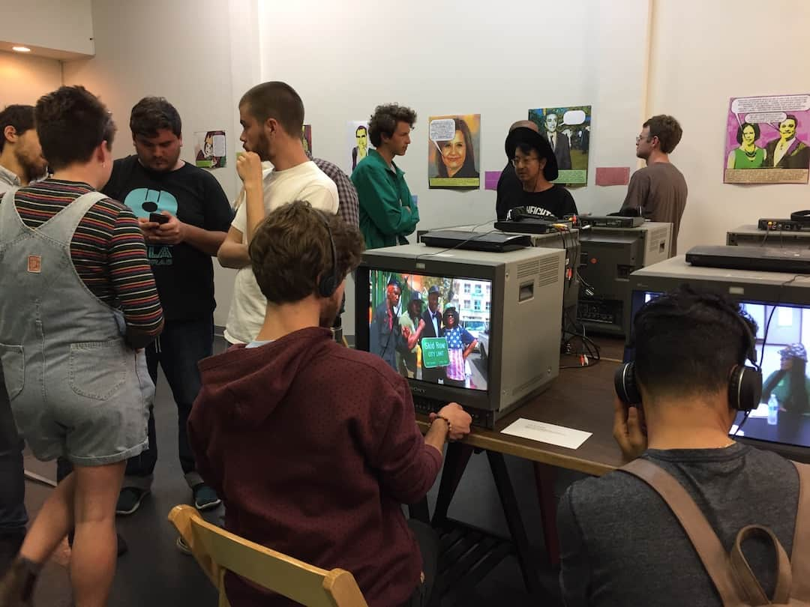

|
Viet Rainbow of Orange County (VROC) (Janury - October 2025) Developed a digital preservation infrastructure for the VROC oral history project to support multilingual access Managed and normalized digital files to ensure their integrity and long-term accessibility, implemented a metadata schema with the Homosaurus controlled vocabulary, and conducted privacy assessments for 30 oral history interviews. Created a digital stewardship manual and trained VROC staff members to increase their capacity for ongoing and future maintenance. Front-end web development: Prach Prasertwit Audio/video editor: Devonte Johnson |
|  |
Skid Row History Museum & Archive (September 2023 - June 2024) Digitized and transferred content from 300+ MiniDV, VHS, Betacam tapes, DVD-Rs, and thumb drives using VRecord and ffmpeg Executed checksums and fixity checks (SHA512 and MD5) to ensure authenticity and preservation of archival materials; used BitCurator suite to recover data from failing thumb drives Performed original item-level cataloging/classification of 500+ previously unprocessed born-digital and digitized assets in the content management system (PastPerfect) using DACS [Award] Andrew W. Mellon Foundation Community Archives Grant | UCLA Community Archives Lab [Panel Presentation] "Developing a National Network of Media Preservation Training Sites" | Association of Moving Image Archivists (AMIA) Conference 2024 |